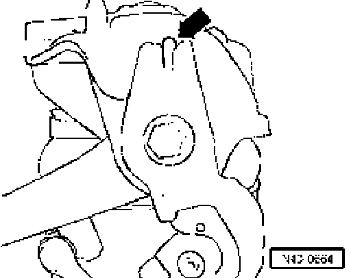

Left and Right Front Level Control System Sensor G78 / G289 (Vehicles With Air Spring Strut)
Left and Right front level control system sensor G78 / G289 (vehicles with air spring strut), removing and installing
Removing
^ Remove air spring strut go to Air Spring: Service and Repair
^ Pull level control system sensor off upper control arm and unbolt it from mounting bracket.
Installing
Installation is reverse of removal, note to the following:

The retainer for level control system sensor must be against nose of mounting bracket - arrow -.
^ Install air spring strut.
Tightening torque
Upper control arm to mounting bracket 50 Nm plus an additional 1/4 turn (90°)
^ Use new bolt and nut.